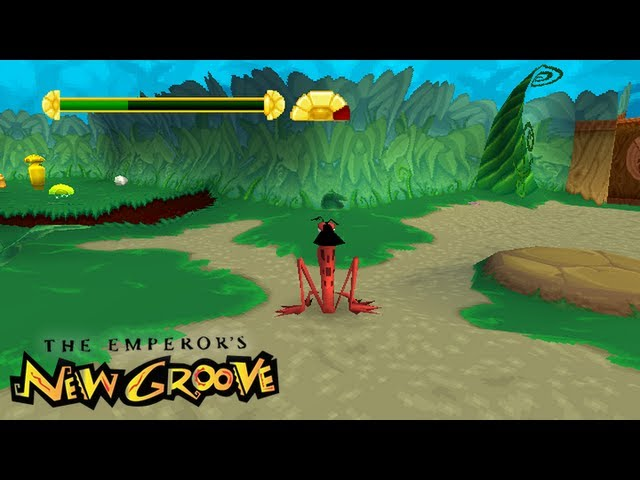

Review

Prelude
Well, I recently finished doing my my first full let's play on my YouTube channel. Oh yeah, by the way, I have a YouTube channel. For those of you that didn't know, I have been living a lie: my real name isn't Polydactica, it's top_ROMen~*.
*sigh* Yes, I confess: I love vido games.
But, these days I am overwhelmed by the number of games out there, and on top of that I just don't find myself having enough time to play as much as I'd like. Yet, I still managed to beat this game by putting in 15-30 minutes or so a day for about a month. And, this is the first new (to me) game that I have beaten, start to finish, in a very, very long time.
So, naturally, I have some thoughts. Let's dive in, shall we?
The Movie
For those of you plebs who don't know, The Emperor's New Groove is a cult-classic Disney movie that released on the very first year of the third millenium. It centers around a narcissistic young adult named Kuzco, the titular empuleror, who wants nothing less than to have all the subjects of his land worship him, build monuments of him, celebrate a holiday named after him, etc. So, basically, he's an Incan version of Kim Jong Un. Although Disney is most famous for its princess fantasies, this is indeed not a story of romantic love - but a buddy comedy. Who's the buddy? Well, he's a peasant named Pacha, who lives on a small farm that Kuzco wishes to level to the ground to build his Kuzcotopia. However, when Yzma (the main antagonist) turns Kuzco into a llama, the unlikely duo forms - and Kuzco agrees to spare Pacha's village as long as he helps transform him back into a human. Along the way, Kuzco learns empathy, and... blah blah blah.
By the way, there's another antagonist: his name is Kronk, and he's hilarious.
The Game
Since the base material for this game is quirky and solid enough, it would be easy to just copy-and-paste the movie onto a Playstation disc, slap on some controls, and call it a day. There is a certain extent to which this is actually done; some of the cutscenes from the movie are imported frame-for-frame, but overall, the game follows the plot of the movie only loosely, rather than religiously.
The changes from the original formula give the developers more creative power, who were able to add in new characters and areas. The dialogue is as punchy as that of the movie, even if I did cringe once or twice during my playthrough. There are several running gags, such as Pacha constantly making his way to an area before the player, only for Kuzco to ask how he got there.
The gameplay is rather straightforward at heart: its a platformer with two attacks: charging, and aerial kicks. The player has to find potions to refill the charge meter in order to use that attack, so the base gameplay consists of just one move. However, fighting enemies is not the most exhilerating part of playing Emperor's New Groove, and I would be selling this game incredibly short if I focusd too much on the combat. Oh, yeah, and I forgot that Kuzco can spit grape seeds, but aside from a boss fight or two, that's mostly just used for hitting targets. Rather, the real soul of the game comes from the diversity, which should keep the player entertained throughout.
The game's diversity is its greatest strength; we have roller coaster levels, a whole water world which actually manages to be fun, stealth sections, puzzles, tons of secrets, as well as straight up transforming into other animals with completely different abilities. These animals include a frog, which requires frustratingly precise yet highly rewarding platforming, a bunny, and a turtle, which is used for I bleieve just a single level, but a very fun one at that. The only unfortunate part is that this mechanic is not used as much as I would have liked it to be, but the rarity of these ocassions make them even more memorable. There's also a horror-esque section of the game involving avoiding a ghost that slowly creeps towards you, that had me scream and kept me on the edge of my seat. I don't think it was intended to be that scary, but it was, in some way that is hard to put my finger on.

The game has a peppy soundtrack, with the very catchy village theme being used as a leitmotif in between levels. One of my favorite tracks is the Mountains track. At worst, I don't notice the tracks are playing, and at best I find myself humming them as I play; they never feel like they are overstaying their welcome. The original voice actors were also hired for the game, so on the audio front, this is a solid experience.
On the downside, however, the game can be too punishing at times. The player is required to start over from the beginning of a level when she dies, unless a specific item is held. This item is rare, and usually found only in secret sections, and not all of them offer the player this item. This might not sound too bad, but the levels can sometimes be forty minutes long, and despite the fact that there are checkpoints everywhere, they do very little because they do not work unless the player has this item.
There are several fast-paced sections, where the player must dash to a certain gate after activating a button before it closes. Sometimes, the path towards these doors can feel like a total labrynth. Ultimately, this didn't hinder my experience, but at one point there was a glitch where the button wouldn't work and I had to restart a level from the beginning.
The final boss of this game was an absolute joke, but the ending stays true to the movie, and there is a secret cutscene that plays after the credits.